Non bisogna mai lasciare borse incustodite che potrebbero anche solo vagamente sembrare
della spazzatura. Qualcuno potrebbe pensare che è roba da buttare.
Quando in politica usiamo "premier" per indicare il capo del governo in realtà stiamo
omettendo "ministro" e dicendo "primo" in francese, premier.
Il programma Erasmus Mundus è proprio una figata. Se lo avessi scoperto in tempo...
In certe piscine, come qui a St.Genis-Pouilly e a Budapest, ci sono delle mini centrifughe
in cui puoi asciugarti il costume.
Se hai due opzioni, sicuramente sceglierai quella sbagliata. Ma questo già si sapeva e si
chiama legge di Murphy.
üîÆ Il primo giorno
5 ago 2024
Bisogna fidarsi dei supervisor, ma non troppo. Sempre meglio fare una domanda in più che una
in meno.
L'accento bergamasco mi fa troppo ridere. "Ue, andiamo giù dabbasso"
Per pagare il caffè serve una carta su un conto svizzero.
Ho imparato come creare un virtual environment con dei jupyter notebooks.
E' proprio vero che ci sono italiani dappertutto! E si fanno pure riconoscere, vedesi urli e
schiamazzi quando l'Italia pallavolo ha vinto alle Olimpiadi.
E' sempre un buon momento per fare una pausa.
üòà Il badge
6 ago 2024
La carta d'identità NON si lascia in giro perchè si rischia di PERDERLA.
Cercare di fare una faccia intelligente non basta per venire bene in una foto.
Maleesh dice sono una "funny person" non ho capito se è una cosa positiva o negativa però.
Non tutti i francesi sono antipatici, ho incontrato una signora gentile oggi in piscina.
"Ehm devo un attimo ingranare". "Tranquilla che anche quando vai avanti rimane uguale".
Penso "imparerò", ma in realtà se guardo le persone più grandi di me anche loro a volte non
sanno. Ed è questo il bello.
La comunicazione è super importante. Puoi non saper fare nulla, ma lo devi saper comunicare
nel modo giusto.
Ginevra
7 ago 2024
Le cose non sono così semplici come sembrano. Se vedi una cosa che ti sembra semplice,
molto probabilmente non lo è.
La fonduta è il piatto tipico di Ginevra. C'è una piattaforma artificiale sul lago in cui si
può fare il bagno e mangiare. Ci sono le cameriere che vanno in giro con questi padellini
rossi pieni di fonduta urlando nomi alquanto improbabili.
La gente di Trieste mi perseguita, me la ritrovo ovunque.
Il sapone può assumere forme alquanto strane.
C'è un gatto tigrato bellissimo che abita nel nostro giardino.
Qua al CERN sono fuori come dei balconi. Una volta all'anno gli studenti possono andare giù
nel tunnel e pulire ATLAS con una specie di aspirapolvere (che non si dice "aspirator",
comunque giuro che non sono stata io a usare questa parola).
La bicicletta
8 ago 2024
Evidentemente, ho la faccia di una che guida la graziella. Il tipo del Mobile Center mi ha
squadrato da capo a piedi
e mi ha dato una graziella bianca tipo quella della zia Giuse.
La salita a piedi è faticosa, ma la salita in bici è ancora peggio.
Un ragazzo greco (forse?) molto gentile mi ha accompagnato all'uscita del campus, visto che
mi ero persa.
Vorrei anche a casa una lampada con i buchi, fa dei bei disegni sul soffitto.
Il caschetto per la bici è obbligatorio.
Maleesh conosce "Sarà perchè ti amo" e anche "Bella ciao". Ma io dico con tutte le belle
canzoni che abbiamo in Italia...
L'arrampicata
9 ago 2024
E' molto comune, tra i fisici, amare il climbing (termine milanese per indicare
l'arrampicata).
Un signore italiano antipatico si è intromesso in una discussione che stavamo avendo fuori
dalla palestra.
Certi giochi da tavolo sono proprio complicati, io mi chiedo cosa sia saltato in testa a
chi li ha inventati.
Oltre a riuscire a passare il processo di selezione, è anche complicato immatricolarsi al
dottorato. Se possono ostacolarti in qualche modo, lo faranno.
C'è una ragazza che prima lavorava in ATLAS e ora fa previsioni del meteo. Si può sempre
cambiare. Non pensare mai
che la scelta che fai è definitiva. Anzi, cambiare è segno di intelligenza.
Le rotonde di Saint Genis Pouilly sono addobbate per festeggiare le olimpiadi. Ad esempio a
Lyion c'è il triathlon.
Le stelle cadenti
10 ago 2024
Bisogna DORMIRE di notte. Altrimenti, la testa può far male, anche malissimo.
Quando vado in pensione, oltre a prendere una laurea in storia dell'arte, mi ritiro in un
cottage in mezzo ai campi.
Non è carino lasciare i cani senza guinzaglio, se non si è a casa propria. Qualcun altro
potrebbe arrabiarsi e avrebbe anche ragione.
E' incredibile come si possa creare una bella sintonia in un gruppo anche solo nell'arco di
poche ore.
Abbiamo riso alle lacrime. Di quelle risate proprio fragorose che fanno bene alla salute. I
vez di Portogruaro (Concordia Sagittaria) sono fuori come delle mine.
Ho visto una stella cadente. Gli altri molte di più. Filippo neanche una. Spero di aver
scelto il desiderio giusto.
Chiara
11 ago 2024
Per mangiare bene in Paesi come la Germania e la Svizzera, NON bisogna mangiare cose
tipiche.
E' sempre un buon momento per salire sul campanile, a vedere la cloche, di una chiesa.
La guida era di CMS ma ha parlato molto bene di ATLAS. Fair play.
Ci vorrebbe una bella tabella dello Standard Model nel Science Gateaway.
E' bellissimo il gioco della bilancia che mostra il contributo alla massa dell'energia.
Dovrebbero implementare anche l'idea di Stefano di triggerare il proprio evento. Io ho
fatto notare che nella maggior parte dei casi sarebbe un evento poco interessante, ma lui
dice che il pubblico che non conosce la fisica non se ne accorge che è un evento poco
interessante.
Ho finito a caso un cruciverba del vez, spuntato per caso dal suo zaino mentre mettevamo
via il cioccolato acquistato. Ops.
Abbiamo acquistato i biglietti e poi li abbiamo persi, ma avevamo la "ricevuta" di
pagamento sul Google Wallet.
Non si capisce perchè diamine in Svizzera non c'è il roaming, cosa gli costa metterlo anche
lì. Che complicazione.
Il tempo sul tram è scorso in fretta perchè abbiamo parlato di cose interessanti, anche
serie a volte.
Le esperienze traumatiche rafforzano le amicizie.
L'orologio
12 ago 2024
Al supermercato un commesso gentile mi ha ascoltato e ha cercato di aiutarmi anche se non
sapevo bene il francese.
Incredibile. Elena ha avuto un'esperienza traumatica simile alla nostra. Fili rossi.
Quando si prende il contenitore di plastica, va restituito, ti danno 10 cfu, ehm chf.
Ho comprato dei polaretti tipo quelli della Maria Luigia.
Lavoro
13 ago 2024
Oggi sono raggiunti 10.000 fill di LHC in Run 3, obbiettivo mai raggiunto prima. Si temeva
un bug, ma è andato tutto bene.
"Tu segui il calcio?" "No, ma lo subisco."
Per pulire il codice pubblico di Athena hanno rimosso gli insulti e le parolacce solo in
inglese, ovviamente, e in italiano, chissà perchè.
Abbiamo parlato di cicogne, sia per via di Colmar che per via del CERN, e proprio al
pomeriggio abbiamo visto uno stormo. Fili rossi. Incredibile.
Per fare le telefonate ci si può mettere lì davanti a casa.
Piscina
14 ago 2024
Stamattina davanti al supermercato, chiuso per un problema tecnico, ho scambiato due
chiacchiere con una signora dell'Ecuador molto gentile.
Ho fatto un po' di ordine nei notebook, ora sono presentabili, e li ho caricati su GitLab.
Evviva.
Pensavo di essere sola per pranzo invece sono arrivate Claudia e Ilaria e inoltre ho fatto
una pausa post-pranzo lunghetta con i baresi e Tiziano. Il vez ha compiuto gli anni oggi,
quindi ha portato una torta Carrefour-made.
Ho finalmente visto Sarah, vuole andare in California per il master+phd.
Ho risentito Federica R. dopo anni. Studia Economia.
Abbiamo preparato una torta con gocce di cioccolato per domani senza fare danni.
Ho di nuovo perso l'orologio, ma lo ho ritrovato nel laundry basket.
Claudia dice che sono la nuova Federica, Federica a sua volta è stata la "nuova" Maria
Giulia.
Grigliata
15 ago 2024
Neanche un pesante acquazzone può fermare la voglia di barbeque a ferragosto degli
italiani.
Oggi io e Federica ci siamo ritrovate in una situazione un po' random a pranzo. Abbiamo
prima incontrato Elene, la mia conquilina, e poi il prof. D'Auria, che per la prima volta in
trent'anni si era portato il pranzo da casa. Sua figlia fa un internship al CERN.
I gatti cacciano i topi solo per divertimento, non per mangiarli.
Mai interferire con la natura.
Ho conosciuto una Giulia M. che ama nuotare e correre, ha i capelli lunghi e scuri (e fin
qua potrei essere io) ma lei è Muon salpiffero Coordinator ed è ligure. Ed è molto carina.
Sempre meglio non rischiare. La soluzione B a volte può rivelarsi la migliore.
La torta con gocce di cioccolato è piaciuta. Giorgia e Sara erano contente non fosse
tiramisu.
Mi devo ricordare di comprare la polo del CERN, molto bella.
Nei campi
16 ago 2024
Sono andata a recuperare la bici al Terrain Jakob. E' stata una bella camminata tra i
campi.
E' tornata Laura e ci ha raccontato delle storie da famiglia del Mulino Bianco.
Oggi l'acqua del CERN aveva un sapore strano.
La macchina gialla come quella di Elena è proprio carina.
Non sono stata bene di stomaco.
Ogni tanto pranziamo con Dilia, avevo usato le sue slides per la parte di dark showers. E'
colombiana.
Dei bambini mi hanno urtato in piscina e mi hanno detto "Desolee Madame". Ma io dico non
sono abbastanza vecchia ancora da meritarmi il "Madame". Mannaggia.
Sta andando troppo in fretta il tempo, non voglio tornare a casa.
Mont Reculet
17 ago 2024
E' meglio non mettere fretta alle persone.
Piano piano si può arrivare ovunque.
Sono una "montain goat", apparently.
Nella nostra gita ognuno aveva il suo ruolo: io motivavo, facevo cheerleading, Maleesh era
la guida e Tiziano sparava super-cazzole e spacciava vitamine e cibarie varie.
La montagna lo fa.
"...like Monica Bellucci. I honestly cannot see any differences."
Riposo
18 ago 2024
Mi fanno un male le gambe...anche la testa.
Sono riuscita arrivare al supermercato in orario di chiusura anche oggi. Io proprio la
spesa con le luci accese non la voglio fare.
Ho mangiato uno dei pompelmi più buoni nella storia di tutti i pompelmi.
Ho cucinato la semola, mi devo ricordare che esiste, a volte me lo dimentico.
Abbiamo giocato a Taboo.
Ho fatto finta di studiare francese.
Ho avuto un gran freddo e mi sono messa la felpa per la prima volta da quando sono qua.
Ho messo la felpa per la prima volta, e me la sono pure dimenticata in giro, tipico mio.
Secondo me lo specchio di Yiota dimagrisce un sacco.
Primo meeting "ufficiale"
19 ago 2024
Ho patito freddo stanotte. Apro la finestra e mi sembra di essere a Ponte di Legno.
Sono arrivata in ufficio con la calma, inconsapevole della giornata che mi aspettava.
"Ma perchè Giulia Maineri parla con questa voce e dice ste stupidate?" - "Eh abbiamo
lavorato troppo insieme e ora siamo una cosa sola." "Bravi bravi vedo che c'è sintonia."
Oggi a pranzo c'era un ragazzo nuovo che pensavo fosse all'inizio del post-doc al massimo
invece ha già 2 figli, gasp.
Abbiamo visto un episodio di una serie tv random sul Netflix di Maleesh, un po' banale ma
ok. Sono 100% sicura che alla fine lui non muore e tutto ok.
La family va due giorni ad Andorra, dove a quanto pare non c'è il roaming, non si sa bene
perchè devono infognarsi in questo staterello inutile ma ok.
Il meeting comunque è stato molto utile e mi ha lasciato un sacco di cose da fare.
The style doesn't go at batteries, dice Tiziano vedendo la mia maglietta della salute
bianca.
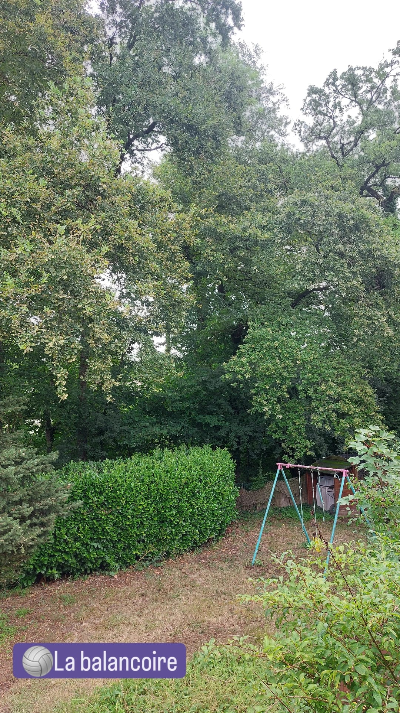
Un po' di disagio
20 ago 2024
Oggi Elena era esaurita perchè gli si sono rotti gli occhiali. Aveva gli occhiali da sole.
L'ufficio di Milano era al completo, c'era perfino Federica. A pranzo con anche Sofia,
Claudia e una nuova che non avevo mai visto (mi sembra si chiami Chiara), quante ragazze!
E mancavano Ilaria e Dilia. In giro ci sono anche Sara, Giorgia e Giulia dei muoni ma non
pranziamo mai con loro.
Abbiamo fatto una prova del discorso di laurea. Complicato perchè è fisica degli
acceleratori, ma si riusciva a seguire. Ha partecipato anche Elene.
Ho urtato un paletto dissuasore che c'è prima del ponticello e ho rischiato di rompere il
caschetto ma per fortuna è andato tutto bene.
Sto leggendo "Il colibrì", è un libro davvero particolare.
Ho usato la borsa della Decathlon di Fede, devo ricordarmi di restituirla.
Laura mi ha spiegato la faccenda del codice SCAB / OTP, che ansia.
"E' un sacco migliorato con l'inglese!" 2 minutes later: "No matter" per dire non ti
preoccupare faccio io. Lacrime.
La crostata
21 ago 2024
Si prospetta una giornata tranquilla. Non c'è il sole e non fa tanto caldo.
Dopo pranzo sono andata a salutare i baresi, che li ho visti in un tavolo fuori. Mi fanno
morire dal ridere, soprattutto Felice. Invece c'era un altro ragazzo nuovo con loro che ha
avuto un uscita poco gradevole, ma pazienza.
Ho messo la maglietta a righe della raffaella, molto carina, mi è piaciuto indossarla.
Sofia è sempre vestita molto elegante.
Elena mi ha accompagnato all'ATLAS Secretariat, bel posto!
Eravamo in corridoio ad aspettare il ragazzo di Laura, ad un certo punto Elena con molta
non-chalance è andata a bussare alla sua porta.
Per un attimo oggi ho avuto paura di aver fatto perdere un sacco di tempo a tutti. Per
fortuna la tabella alla fine era giusta.
Ho preparato una farewell crostata. Senza mattarello!! Con tutti il ben di dio che ha la
Yiota, non ha un rolling pin. Ho fatto un pattern a caso, ma alla fine era molto carina, e
sopratutto buona.
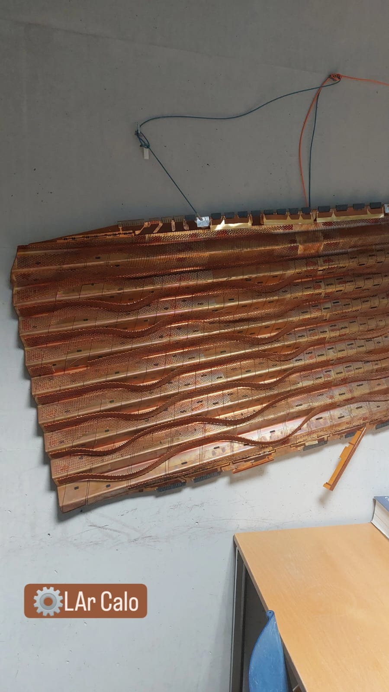
Fit e meeting
22 ago 2024
Ho seguito per la prima volta il meeting di photon ID, non ho capito molto, ma poteva anche
andare peggio.
Ho usato RooFit per fare dei magici fit.
Ero un po' nervosa a fine giornata.
Al ritorno ho camminato portando la bici a mano, sperando di calmarmi. Non ha troppo
funzionato, ma ci è riuscita la doccia poco dopo.
Claudia ci ha raccontato del bambino che è nato, "sta a ranocchia".
Ho ascoltato il podcast quello Breaking Italy, molto divertente e se scegli l'ospite giusto
anche formativo.
Stavo andando in bagno tranquilla ma poi ho incontrato Tiziano e siamo andati a finire al
builduing 30.
C'era la famiglia di Elene a casa, io e Maleesh urlavamo come matti speriamo di non averli
spaventati.
Abbiamo parlato di molti argomenti anche più seri del solito.
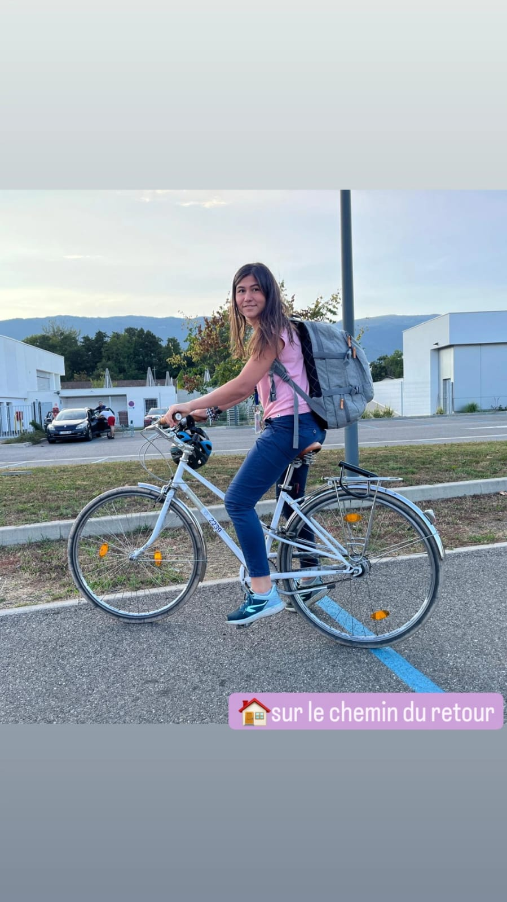
Au fil de l'O
23 ago 2024
Ho notato per la prima volta che al mattino mettono un robottino dentro la piscina esterna,
per pulirla.
A lavoro è andato tutto bene, era l'ultimo giorno di Stefano prima delle vacanze.
Sono andata a far la spesa al mattino presto.
Elena aveva un vestito a strisce di Max Mara e una signora di una certa età l'ha fermata
per dirle che aveva lo stesso identico vestito.
Nella parte esterna della piscina, main attraction in St. Genis Pouilly, c'è tutto un
percorso a onde, secondo me è un po' pericoloso ma è stato divertente.
Serata con Maleesh, Tiziano ed Elene, mamma mia quanto abbiamo riso. Il vez è venuto in
bbicicletta vestito fosforescente, trovare la casa di Yiota non è banale.
Ginevra, sede dell'ONU
24 ago 2024
I giochi del Gateaway sono piaciuti, il papà era quello che dava più soddisfazioni devo
dire.
La mamma invece voleva sempre accelerare...
c'era Dilia in un video sull'Higgs, invece purtroppo la bilancia era rotta. Però alla mamma
è piaciuto molto il cartello: "Our team is busy finding out all the mysteries of the
Universe, including the reason why this machine doesn't work anymore."
Siamo andati a mangiare il poke in Place Grenus.
Ho notato che a Ginevra ci sono le bici Donkey Republic.
Ho portato la family in zona Palais des Nations e Jardin Botanique, è stata una bella idea
perchè al Luca sono piaciute le 200 bandiere e alla mamma piacciono le piante. Davanti al
Palazzo delle Nazioni Unite c'è una Broken Chair contro la guerra e contro le mine
anti-uomo.
A bains de paquis siamo stati bene, anche se all'inizio c'era tanta gente.
Il papà mi ha raccontato che ha visto un picchio sulla scala. Incredibile.
"Ma cosa fai?", "Mi ispiro ai bradipi", "Eh ispirati alla natura con il pollice opponibile
per favore"
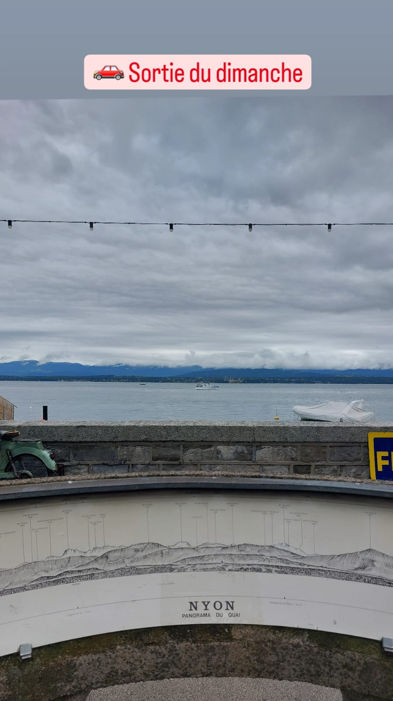
Nyon e Losanna
25 ago 2024
A Nyon c'erano dei mercatini di antiquariato e molti avevano stendardi della Fiat.
Abbiamo giocato molto a indovinare le bandiere con il Luca.
Felice è super alto, praticamente se impili noi 3 ragazze ottieni la sua altezza.
A Losanna c'era una piscina nel lago bellissima!!
Il museo delle Olimpiadi mi è piaciuto molto. Quando siamo usciti c'era un gruppo di cinesi
tutti vestiti eleganti, ma comunque in modo un po' improbabile, si facevano le foto, non si
è capito se ci fosse un evento o cosa. Forse una festa privata, ma perchè farla al Museo
Olimpico??? La cosa strana è che non parlavano inglese. Inoltre c'era una signora abbastanza
anziana con un cerone letteralmente bianco in faccia.
Con i baresi c'era anche Simone, sempre di Bari, che però fa un master alla Bocconi a
Milano.
Losanna è la sede del comitato olimpico.
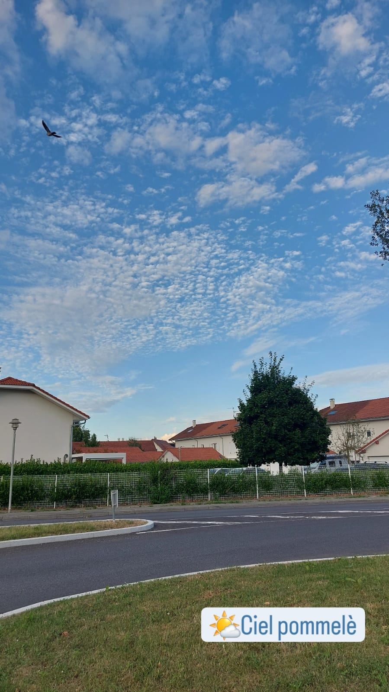
Un nuovo lunedì
26 ago 2024
Sono andata a far la spesa al mattino. Ho dimenticato di comprare il sale.
E' arrivata Eleonora, che fa la tesi triennale con Leonardo, è qui per il test beam.
Alle 14 avevamo il meeting con Leonardo, è andata bene anche se Ruggiero non è proprio
facilissimo da gestire.
Mentre le altre andavano a prendere il caffè ho parlato per la prima volta con Mathis,
molto carino, ha raccontato, si vede che in gruppo è timido e sta sempre zitto.
Al pomeriggio è arrivata anche Federica in ufficio. Eravamo sempre 4, perchè Elena non
c'era. Ha avuto dei problemi al mattino, è andata giù a sostituire un modulo.
In piscina il signore che vedo sempre che va perlopiù a dorso mi ha incrociato nella zona
di cambio scarpe e mi ha detto come nuoti bene! da dove vieni? Italiè. Ahh voilà, l'Italie
est un pays de nageurs exceptionnels! (stavo morendo dal ridere, ma ho solo sorriso).
Abbiamo parlato un po', sapeva qualcosa di inglese. Molto simpatico.
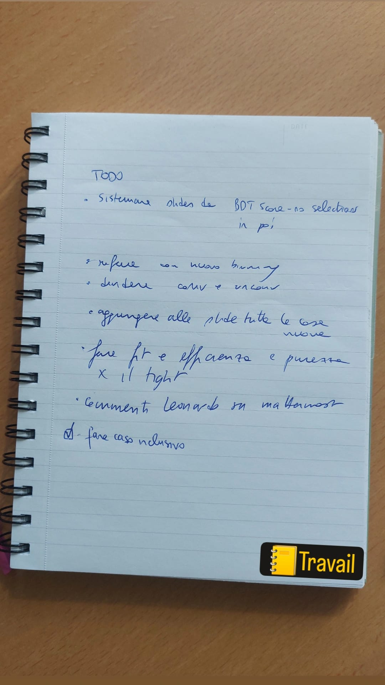
Fit a tutto spiano
27 ago 2024
Oggi abbiamo lavorato intensamente. Ho staccato alle 19, però ero arrivata tardino al
mattino.
Mentre entravo al CERN in bicicletta pensavo di aver visto Elena, ma evidentemente mi
sbagliavo perchè poi non
c'era in ufficio.
L'unicorno in corridoio aveva pochi badge al collo, segno che non c'era tanta gente in
ufficio
Oh al CERN ci sono migliaia id persone ma io vedo quasi tutti i giorni, per caso, la figlia
del D'Auria. Forse è perchè ha i capelli rossi.
Sono andata al Mobility Center per cercare di gonfiare la gomma davanti della bici ma non
ci sono riuscita.
Bisogna sempre stare attenti al ritorno durante la discesa perchè ci sono tre buchi, sono
anche segnati con croci gialle, ma a volte sono stordita e riesco di finirci dentro. Anche
perchè all'orario che torno io, il confine tra luce e ombra è esattamente all'altezza dei
miei occhi, quindi non vedo benissimo, che fortuna...
Ho scoperto che anche Claudia ha fatto il Volta, quindi a pranzo abbiamo parlato solo di
quello.
Alla sera ero un po' triste, ma ho guardato una puntata di Lolita e mi sono riposata.
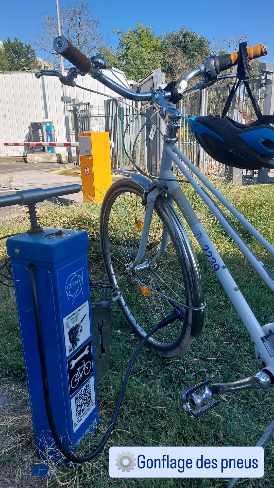
Pit stop
28 ago 2024
Sono riuscita a gonfiare le gomme della bicicletta. Avevo chiesto aiuto al vez, ma poi non
è servito, meglio così non lo ho disturbato troppo.
Ero un po' confusa sul da farsi con i fit oggi sinceramente.
In piscina è continuata la mia conversazione con il signore pensionato francese.
Dani era più contento del solito mi è sembrato.
Tornata a casa c'era un sacco di gente in cucina. Un po' troppo invasione forse ma in
realtà non mi ha dato troppo fastidio. Mi sono messa in salotto.
Ho studiato un po' di francese semi-seriamente dopo cena.
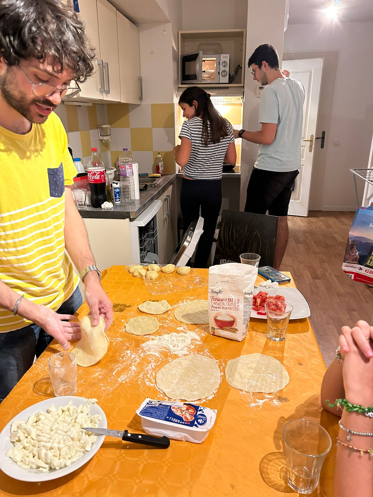
Cassoni romagnoli e tiramisù
29 ago 2024
Oggi ho avuto tanto male allo stomaco, davvero. Ma non sapevo che farmaci prendere.
La Elena oggi è arrivata per pranzo. La Federica alle 15 e poi alle 16 è andata a fare
pausa.
Io arrivando presto al mattino in ufficio mi sento legittimata ad andare via "presto"
(comunque dopo le 17) ma mi spiace che pensino che lavoro poco perchè non mi vedono al
mattino.
Sono tornata a casa, ho preso gli ingredienti per il tiramisu e mi sono trovata al
Carrefour con Marco. Siamo andati insieme a casa dei baresi a cucinare.
Ho scoperto che Marco non è di Bari, ma di Bologna, anzi di Rimini a dir la verità e ha una
ragazza abruzzese.
E' stato molto bravo a fare i cassoni, io ho fatto il tiramisù è stata una serata
bellissima. Felice e le ragazze con i loro anneddoti mi hanno fatto ridere alle lacrime.
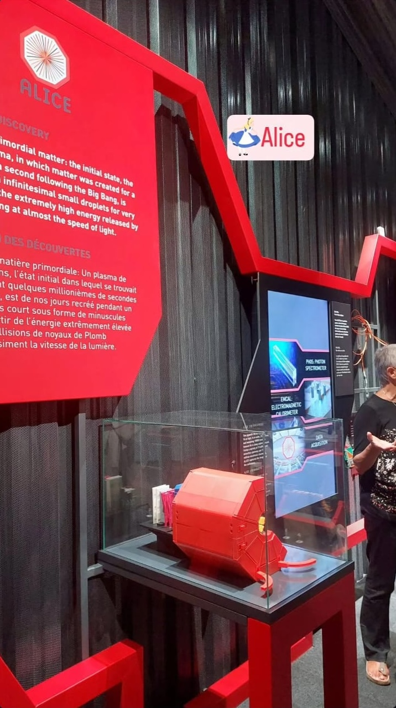
Alice nel paese dei detector
30 ago 2024
Stamattina mi sono imbucata nella visita di Alice organizzata per il gruppo di Lisa e
Felice. Ovviamente tanti baresi e c'era anche quella ragazza che vedo sempre al Carrefour.
La guida era greca (ho indovinato!) ed era molto carina.
Siamo riuscite a far convergere i fit restringendo il range dei parametri!
Wow ogni volta resto sconvolta dalla parlantina di E., davvero spigliatissima, io non
riuscirei a essere così neanche sotto tortura probabilmente.
Ho preso per la prima volta lo shuttle, parte a e41 dalla fermata lì tra il 40 e R1.
Comodissimo.
Era l'ultimo giorno di Laura P., che domani torna a casa. Siamo andate a prendere il gelato
delle particelle, un baracchino che c'è sotto il Gateaway. Ha successo direi, c'era coda.
"Tu cosa facevi durante il covid?" "Analisi 2..." Risate...non sono ancora abituati al
fatto che sono "piccola" rispetto a loro.
Quando sono tornata c'era la mamma che puliva la veranda, che carina...
Il fratello di E. mi ha detto che erano preoccupati visto che non mi hanno visto per tutto
il giorno (sono uscita presto e tornata tardi), ma che carino...
Mentre cucinavo ho ascoltato le mie solite interviste random e ad un certo punto c'era uno
che era il fratello della mamma di un compagno di Luca, lo ho riconosciuto perchè assomiglia
davvero tantissimo.
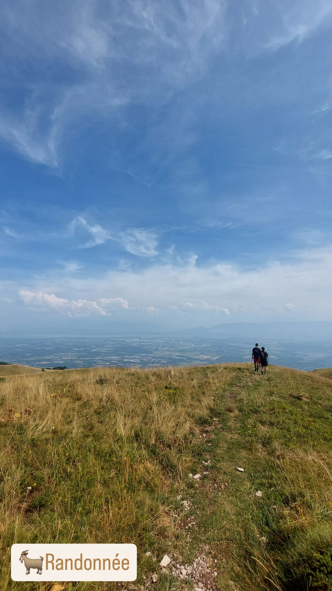
Monte Reculet up to the top
31 ago 2024
I baresi andavano a visitare una città svizzera, ma io avevo voglia di andare in montagna.
Allora mi sono buttata e sono andata insieme a degli sconosciuti del gruppo di hiking.
Sono stata moolto fortunata perchè ho risposto subito sul gruppo e ho vinto un passaggio in
macchina fino al punto di partenza.
Ho conosciuto delle persone fantastiche: Alessia, Lorenzo, Connie, Tony, Alejandro, Tery...
è stata un'emozione fortissima buttarsi a capofitto e trovarsi così bene. Ancora una volta
mi sono sorpresa di quanto può essere facile far nascere un gruppo di amici o se non amici,
un gruppo di persone che stanno bene insieme e hanno voglia di condividere una bella
giornata di sole.
Questa volta siamo partiti dal parcheggio sopra a 800m e siamo arrivati questa volta fino
in cima alla croce, a 1850m.
Mi sono sentita molto bene alla fine.
C'era talmente sintonia che abbiamo deciso, dopo una doccia rigenerante, di andare fuori a
bere qualcosa.
Highlight dei personaggi: C. appena vedeva una caverna voleva ficcarcisi dentro che io dico
se rimane incastrata o se ci sono molti scarafaggi (entrambe circostanze che abbiamo
rischiato); A. era ossessionata dai suoi innumerevoli ex; A. era un tipo da vita loca e
forse l'unico ancora con l'anima da ragazzino che ho conosciuto in questo periodo; T.
sembrava innocuo fino a quando...
...fino a quando si è presentato in birreria con la fidanzata, e fin qui no problem, ma
stanno insieme da 2 anni ma in questi anni si sono visti solo 2 volte, una in Inghilterra e
una in Grecia. E ora abitano insieme a St. Genis e parlano già di sposarsi. Io e Lorenzo sconvolti. Comunque in bocca
al lupo.
La sera mentre cucinavo mi sono letterlamente bruciata un dito. Ho visto le stelle dal
dolore.
Allora siccome non avevo il ghiaccio ho messo gli spinaci congelati, furbona che sono,
soltanto che hanno rilasciato un liquido verde che ancora devo capire come smacchiare.
Ho messo su qualcosa di leggero su Youtube cercando di non pensarci. Spoiler: non ha molto
funzionato.
Elene aveva uno spray per le scottature, non so se ha funzionato ma un po' il dolore lo ha
alleviato.
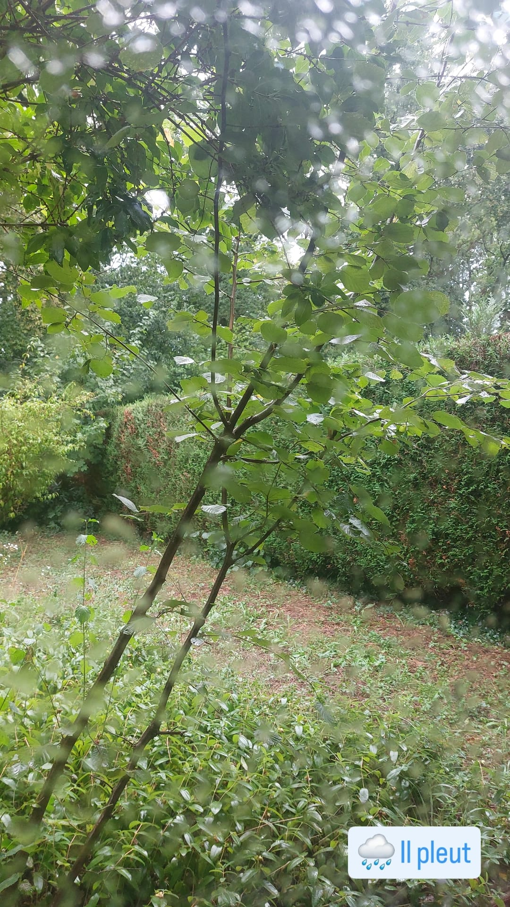
Voleva essere una domenica tranquilla
1 set 2024
Ennesimo ragno grande. Panico paura. Aiuto.
Mica mi bussa Elene alle 9. Continuava a ripetere "cat" e "garden", e non si capiva altro,
era mezza addormentata e mezza spaventata. Io dico, lo so che c'è un gatto in giardino,
perchè diamine mi devi svegliare a quest'ora di domenica?
Alla fine il problema era che il gatto era morto. Ma porca vaccca. E ora cosa facciamo, chi
lo seppellisce, come è morto? lo hanno ucciso? ha mangiato qualcosa di velenoso...e
vattelapesca.
Non sapendo cosa fare, vado al Carrefour a comprare garze per il mio dito. Esco con una
barca di garze, ma non avevo alternative, le opzioni erano o 4 o 60.
Quando torno vado a buttare la spazzatura, cosa che faccio solo io in questa casa.
E finalmente un colpo di fortuna: il vicino dice che il gatto è morto perchè vecchio e lo
porta via lui. Chissà che impressione gli ho fatto, con la maglietta del Poli, i guanti e
gli occhiali da sole...
Dopo pranzo, suona il campanello. E' un ragazzo tedesco che ha sbagliato indirizzo. Doveva
andare a Prevessin. Non ha internet e ha guardato un video in Svizzera il geniaccio, pagando
di conseguenza 60euro e ottenendo il bloccaggio della sim. Gli diamo delle indicazioni e se
ne va, anche se un po' disperato. Gli dico "ti lascio il mio numero di cellulare", ma non lo vuole
dicendo che tanto non può telefonare nessuno.
Verso le 16 dovevamo andare in piscina con i baresi, ma dal cielo sereno parte un
acquazzone con tanto di fulmini e goccioloni. Decidiamo quindi di rimandare.
In tutto questo casino mi dimentico dei panni, ma scopro che Elene molto gentilmente li ha
messi lei nella dryer.
Fa un certo effetto vedere la data di "settembre".
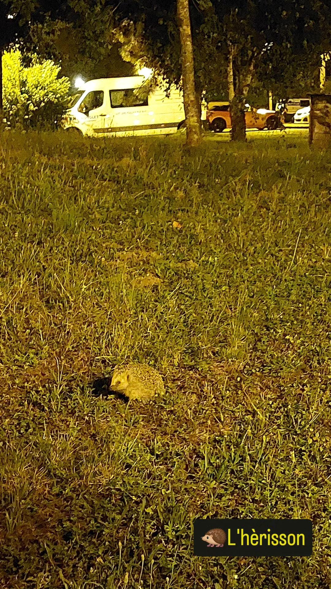
La farmacista
2 set 2024
Mi sveglio propositiva per la nuova settimana, ma è nuvoloso...
Asciugo ripetutamente il sellino ma arrivo in ufficio lo stesso con le chiappe bagnate.
Saluti a Elene e famiglia...che dispiacere. In bocca al lupo.
Esco sul presto e vado in farmacia. Racconto la storia alla farmacista, molto carina e anglofona. Non riesco a non ridere.
Meeting delle 13:30 veramente tosto...anche Elena era stanchissima alla fine.
C'era un casino in mensa mai visto. Ho intravisto Andreazza ma non siamo riusciti a dirci nient'altro se non "Buongiorno!"
Ho dimenticato il sapone a casa.
Le gambe comunque facevano male dalla camminata.
L'antisettico fa davvero molto male.
Il gelato delle particelle
3 set 2024
Oggi ero quasi sola in ufficio. E' da tanto tempo che non vedo Federica, ora che ci penso.
Pranzo con i baresi, per la prima volta ad un orario normale, tipo le 13.
Dopo pranzo, andiamo a prendere il gelato delle particelle, quello sotto il Gateaway.
Sulla via del ritorno, mi chiama dani, timing perfetto.
Presa bene dalle cose da fare, sto in ufficio fino a tardi, tipo 18:45. Poi sosta al supermercato e casa.
Mi metto a cucinare mentre ascolto qualche intervista di attualità, è tutto più complicato con il dito fasciato.
Alla sera guardiamo "La prima cosa bella" di Paolo Virzì, bel film...
Prevessin
4 set 2024
Temevo la pioggia quindi ho preso lo shuttle. Ho sbagliato e quindi sono finita a Prevessin. Alla fine niente di male, ho fatto un giro turistico nel sito di Prevessin.
Oggi ho cominciato che sembrava una tragedia visto che non mi uscivano bene i fit, ma poi il lavoro ha preso una insapettata, ma positiva, piega.
Eleonora è passata a salutare, tornava a Milano (in flixbus).
Siamo andati a pranzo e io non ho portato il golfino, quindi avevo freddo.
Sul bus un bambino, ma piccolissimo, avrà avuto un anno, ha preso il biglietto dalla macchinetta (io non ci arrivavo, lui si, era sul passeggino) e me lo ha passato.
In piscina mi faceva male il dito...
Ho finito il libro di Lorenza Gentile e ho iniziato a leggere "La guerra non ha volto di donna".